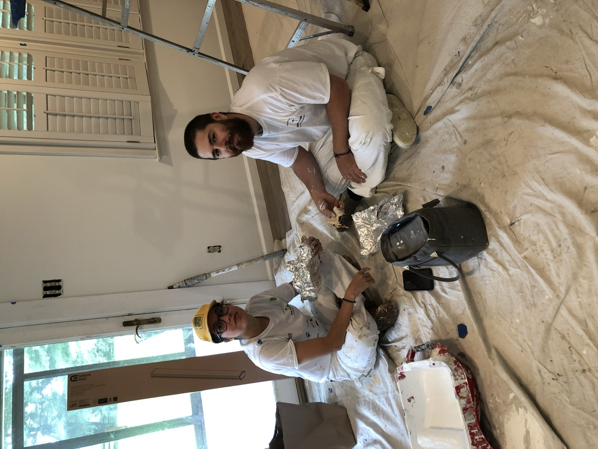
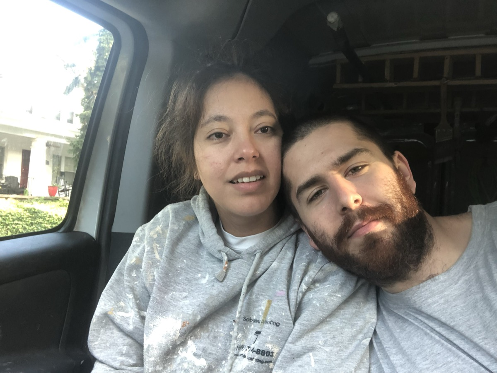
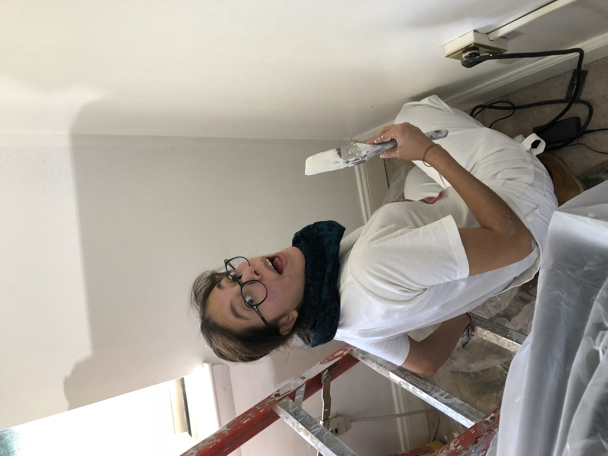
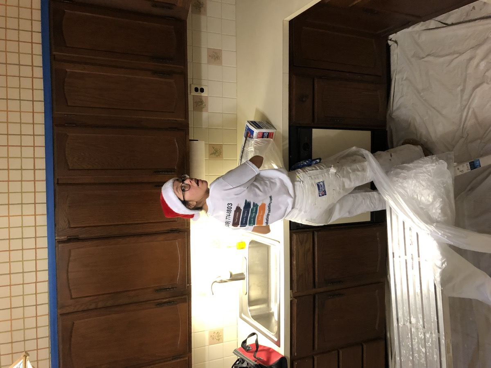
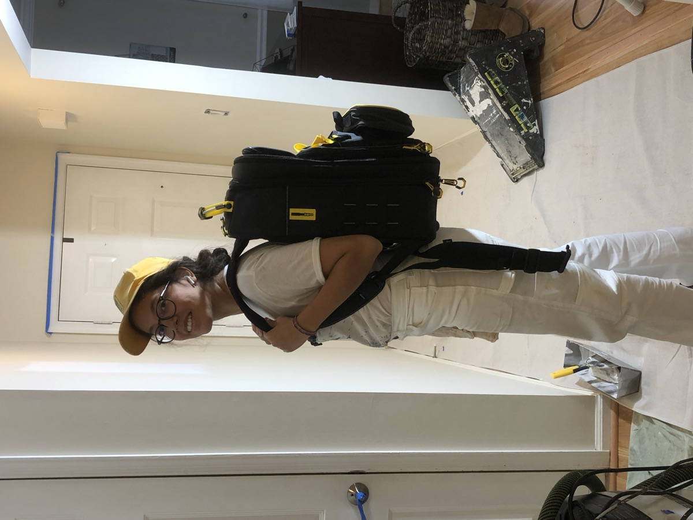

History
The moments that made us who we are — two people, two very different starting points, one company.
Rick
Born in South Jersey.
Age 21, moves to Philadelphia to chase a career in music — working odd jobs to get by.
Ale
Born in Cochabamba, Bolivia.
Age eight, moves across the world to Bergamo, Italy.
Age 24, moves to the United States to work as an au pair.
Three weeks after Ale arrives, she meets Rick. Two completely different starting points, an ocean apart, become one story.
Rick and Ale start Sabatini Pro Painting together — two people who happened to be good at painting, with no five-year plan and no trades-family background to lean on.

They finish $1,000 in the hole. A loan from Ale's father keeps them going. They live in a small room in Chester, PA, and drive an $800 1998 Ford Econoline to every job. A year later, the loan is paid back in full — plus a second van and their first real crew members.

Four unglamorous years with no real plan beyond the only guide that mattered: do the best job you possibly can.

The same week Ale tells Rick she's pregnant, COVID shuts the world down. Rick realizes three things at once: Ale's time in the field is ending, he can't run this alone, and he has to learn — however long it takes — to lead people the way he and Ale had led themselves.
Rick finds the Academy for Professional Painting Contractors and flies the family to a conference in Florida — coming home both ashamed of where the business stood and lit up by what was possible. Growth follows fast. So does the hardest year yet: nine new hires, most of whom don't last.

Ale's father, Teofilo, visits and works a job alongside Rick. Every day, he says the same thing in Spanish: "Falta gente, falta gente" — you need people. On Teo's last day, Rick brings in a guy to try out: Virgilio. He's excellent from day one, and he never leaves — the standard for every hire since.
Rick adds up the year's revenue for the first time: $91,000 — two or three years removed from finishing a year $1,000 in the red.
Over 60% of Sabatini's business comes from repeat customers and referrals. Not a coincidence — just what happens when the experience is good enough that people come back and send their friends.

Filler content for testing — pulled from the full brand story, not a complete transcription of it.